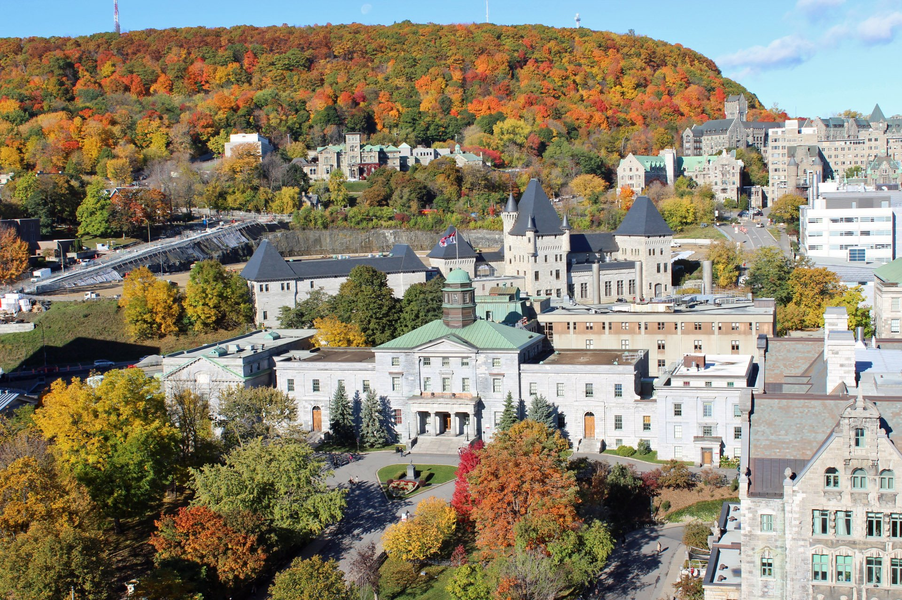

McGill University: Pros and Cons from a Anglophone Undergrad
I was recently asked a question by my sister's friend who was deciding between attending NYU and McGill, how was your experience going to McGill and living in Montreal? This gave me the idea to write a bit about my experience attending McGill.
I hope to write about the positives and negatives of McGill and Montreal, from the perspective of an anglophone (English speaking) undergraduate student. I hope this will help any prospective students, incoming students, or anyone else interested in the school.
To give some background about myself, I'm a recent graduate of the McGill School of Arts. I did a double Major in Software Engineering and Economics, taking classes from 2015 to 2020. I come from the Greater New York area and attended middle school and high school at a public school. I have lived in McGill residence, the Ghetto, the Plateau, and the Mile End.
I am splitting this post up into three parts, the Pros, the Cons, and Extra Comments, to avoid one lengthly post. I do have other topics I can cover in detail, such as courses, residences, and bars, but I will save that for another time.
Index
Back to Blog